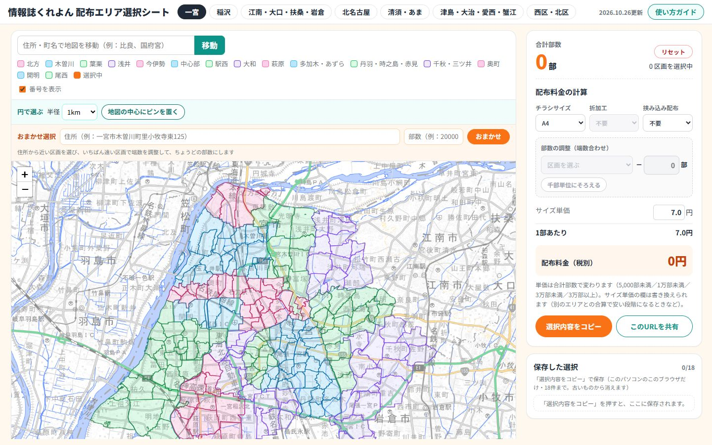
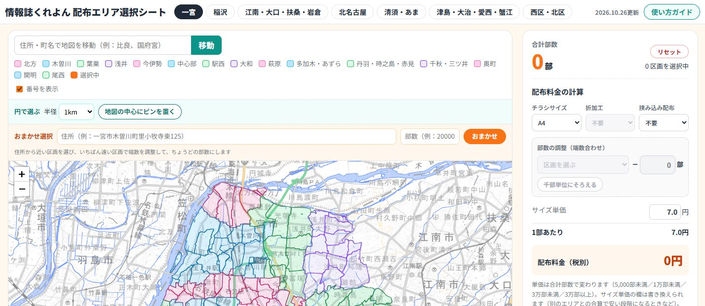
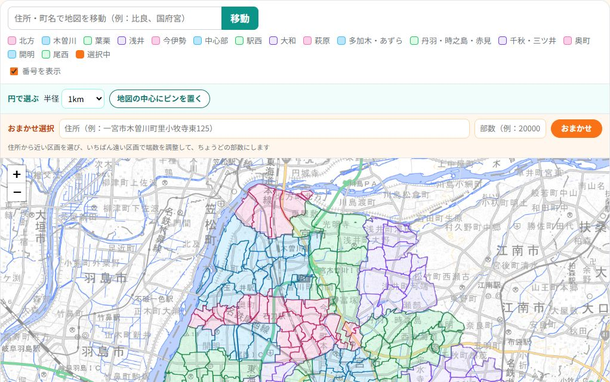
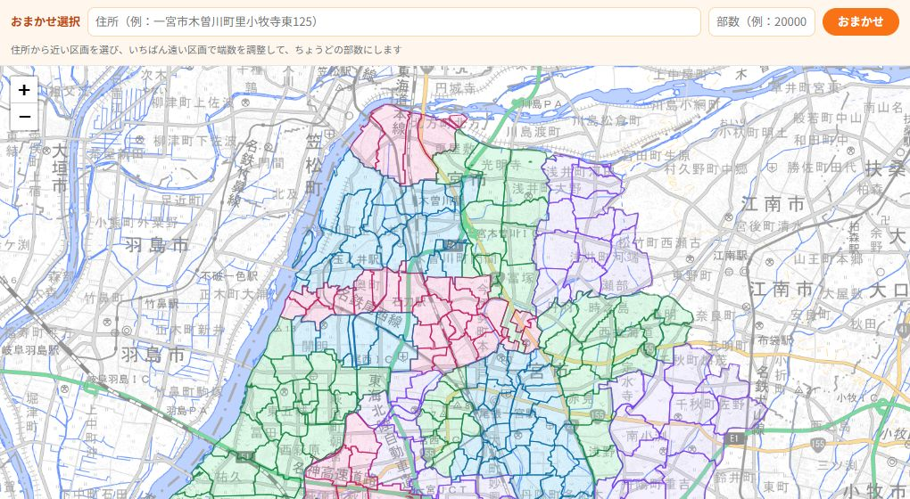
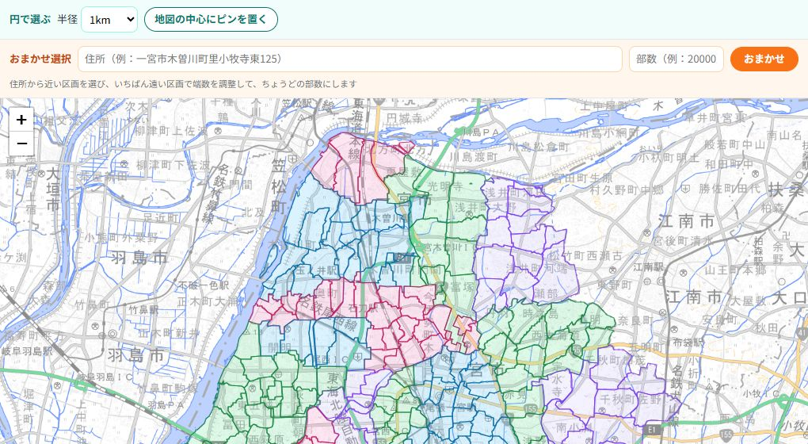
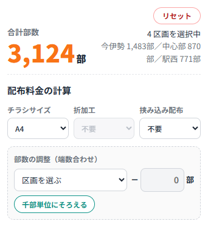
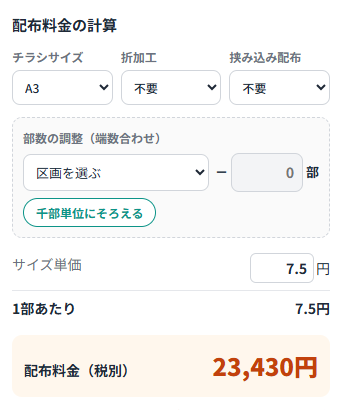
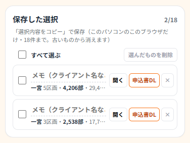
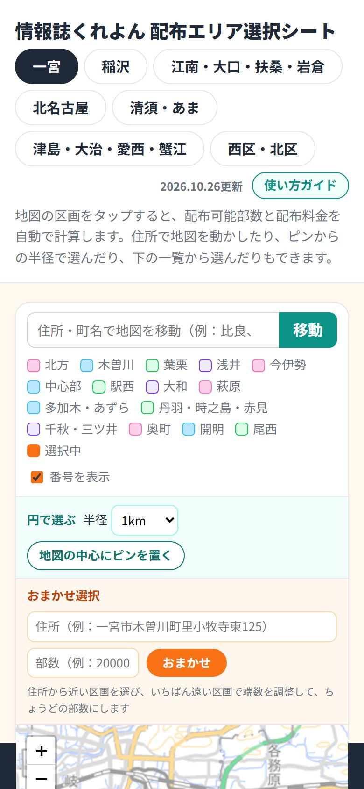

1はじめに（3ステップ）
動きで見る：見積もりの基本（3ステップ）

この順に押します
配布エリアを選ぶと、配布できる部数と配布料金（税別）がその場で出ます。ログインは要りません。
- エリアを選ぶ：上の「一宮」「稲沢」などのボタンで、配布したい版を選びます。
- 区画を選ぶ：地図の区画を押すか、下の「区画一覧」のチェックで選びます。住所と部数から自動で選ぶ「おまかせ選択」もあります。
- 右の合計を見る：合計部数と配布料金が出ます。「選択内容をコピー」でメールやLINEに貼り付けられます。
困ったときは、右上の合計部数の横の「リセット」で、選んだ区画をすべて外してやり直せます。
2画面の見方
動きで見る：画面のどこに何があるか

見る場所
- いちばん上：エリア（版）の切り替えボタンと、データの更新日、「使い方ガイド」。
- 左の列：住所で地図を動かす欄・「円で選ぶ」・「おまかせ選択」・地図。その下に区画一覧があります（パソコンでは左の列だけで上下に動きます）。
- 右の列：合計部数・配布料金の計算・コピーと共有のボタン・保存した選択。
地図の区画は地域ごとに色分けされています（色の見本は地図の上）。選んだ区画はオレンジ色になります。区画にマウスを乗せると、名前と部数が出ます。
3エリア（版）を切り替える
動きで見る：エリア（版）を切り替える

この順に押します
- いちばん上のボタンで、エリアを切り替えます（一宮／稲沢／江南・大口・扶桑・岩倉／北名古屋／清須・あま／津島・大治・愛西・蟹江／西区・北区）。
- エリアごとに選んだ区画は覚えています。切り替えて戻っても消えません。
- 1回に計算・申込書にできるのは、表示しているエリアだけです。2つの版にまたがるときは、エリアごとに計算してください。
4区画を選ぶ・外す
動きで見る：区画を選ぶ・外す

この順に押します
- 地図の区画を押すと選ばれて、オレンジ色になります。もう一度押すと外れます。
- 下の区画一覧のチェックでも同じように選べます（行のどこを押してもかまいません）。
- 一覧の上の「○○をすべて選択」で、その地域をまとめて選べます。その地域が全部選ばれているときに押すと、その地域だけ全部外れます。「すべて解除」は、このエリアの選択を全部外します。
- 地図はマウスのホイールで拡大・縮小、ドラッグで移動できます。拡大すると区画の名前が出ます（「番号を表示」のチェックを外すと消えます）。
- 地図の上の欄に住所や町名を入れて「移動」を押すと、その場所へ地図が動きます。
5おまかせ選択（住所＋部数）
動きで見る：住所と部数でおまかせ選択

この順に押します
お客様の住所と部数を入れるだけで、近い区画から自動で選んで、ちょうどの部数にします。
- 住所に近い区画から順に選び、部数を超えた分はいちばん遠い区画で減らして調整します（減らした分は「部数の調整」に入ります）。
- 住所の場所には赤い★が付きます。
- 押すたびに、前の選択はいったん消えてから選び直されます。選んだあとに、区画を足したり外したりもできます。
先に正しいエリア（版）を選んでから押してください。住所がエリアから離れているときは、注意が出ます。
6円で選ぶ（ピンから半径）
動きで見る：ピンから半径で選ぶ

この順に押します
- 地図をお店の場所あたりへ動かして、「地図の中心にピンを置く」を押します（もう一度押すと、ピンが今の地図の中心へ移ります）。
- 半径（0.5〜5km）を選ぶと、円の中に入る区画の数と部数が出ます。ピンはドラッグで動かせます。
- 「この円の○区画を追加」で、円の中の区画をまとめて選べます。
部数を決めて選ぶとき：ピンを置くと出る部数の欄に部数を入れて「この部数でおまかせ」を押すと、ピンから近い順に選んで、ちょうどの部数にします（円の外の区画も足します）。終わったら「円を消す」を押します。
7部数の調整（端数合わせ）
動きで見る：部数の端数をそろえる

この順に押します
合計を「30,000部」のようなきりのいい数にしたいときに使います。
- 「千部単位にそろえる」を押すと、端数を1つの区画から自動で減らします（減らす区画を選んでいればその区画、選んでいなければ部数がいちばん多い区画）。
- 自分で決めるときは、「区画を選ぶ」で減らす区画を選び、減らす部数を入れます。
- 減らした区画と部数は、合計の下と申込書に「※部数調整」として出ます。
8配布料金の計算
動きで見る：配布料金を計算する

この順に押します
- チラシサイズ・折加工・挟み込み配布を選ぶと、配布料金（税別）が変わります。
- 配布料金 ＝ 合計部数（調整後）×（サイズ単価＋折加工＋挟み込み）。
| サイズ単価 | 合計部数で変わります（5,000部未満／1万部未満／3万部未満／3万部以上）。A4・B4：7.0／6.5／6.0／5.0円、A3：7.5／7.0／6.5／5.5円、B3・A2：8.0／7.5／7.0／6.0円 |
|---|---|
| 折加工 | B4・A3：＋2円、B3・A2：＋4円（A4は折加工なし） |
| 挟み込み配布 | ＋2円 |
- サイズ単価は書き換えられます。別のエリアとの合算で安い段階になるときなどは、サイズ単価の欄に単価を入れてください（「手動」と表示され、コピー文・保存・申込書にも使われます）。
10保存した選択・申込書
動きで見る：保存した選択を使う・申込書を作る

この順に押します
- 「選択内容をコピー」を押すと、右の「保存した選択」に自動で残ります（このパソコンのこのブラウザだけ・18件まで。古いものから消えます）。
- メモ欄にクライアント名を入れておくと、あとで探しやすくなります。
- 「開く」でその選び方に戻ります。
- 「申込書DL」で配布会社向けの申込書PDF（A3・2枚：1枚目＝エリア別配布部数と注文書、2枚目＝選んだ区画の地図）を作ります。スタッフ用で、社内で共有しているパスワードが必要です。
- いらなくなった保存は、左のチェックで選んで「選んだ○件を削除」か、「×」で消せます。
11スマホで使う
動きで見る：スマホで使う

見る場所
- スマホでは、上から「エリアのボタン → 地図 → 合計・料金 → 保存した選択 → 区画一覧」の順に縦に並びます。
- 画面の下に、いつでも合計部数と料金が出ます。
- 地図は2本の指で拡大・縮小できます。区画はタップで選びます。
12よくある質問
- 選んだ区画を全部外したい
- 右の合計部数の横の「リセット」を押してください。今のエリアの選択・部数調整・ピンが消え、チラシサイズはA4、折加工・挟み込みは「不要」に戻ります。
- 地図が白くて表示されない
- 通信の具合で地図の画像が遅れることがあります。少し待つか、再読み込みしてください。計算はそのまま使えます。
- 住所が見つからない
- 番地を省いて「○○市○○町」まで入れてみてください。それでもだめなら、地図を動かして「円で選ぶ」を使ってください。
- 一覧に「地図なし」と出ている区画がある
- 配布マップに場所がない区画です。一覧のチェックで選べます。
- 前に保存した選択が見当たらない
- 保存は使ったパソコン・ブラウザの中だけに残ります。別のパソコンやスマホでは出ません。URLで共有すると、どこでも開けます。
- 区画の境目が実際と少しずれている
- 区画の形は配布マップと国勢調査の町丁目の境をもとに作っています。数十メートルずれることがあります。正確な範囲は配布会社の配布マップで確かめてください。